KI-Co-Pilot
KI-Co-Pilot mit Quellenangabe – der Mensch entscheidet
Der Co-Pilot von SocialHub CX entwirft Antworten und Zusammenfassungen aus den Quellen, die Sie freigeben, und zeigt sie an. Gesendet wird jede Antwort von einem Menschen.

Worum es geht
Der Co-Pilot arbeitet mit dem, was Sie freigeben: Help-Center-Artikel, Dateien und – wenn Sie es einschalten – gelöste Tickets. Er zeigt immer, worauf seine Antwort beruht. Die KI von SocialHub CX läuft über Microsoft Azure mit EU-Endpunkt. SocialHub CX trainiert keine KI-Modelle mit Kundendaten.
Was enthalten ist
- Schnellaktionen in E-Mail- und Social-Tickets: „Antwort entwerfen“, „Ticket zusammenfassen“, „Was sagt die Wissensdatenbank?“
- Allgemeiner Chat mit Verlauf; Fragen in jeder Sprache möglich
- Optional: Antwortvorschläge automatisch vorbereiten – nie automatisch versendet, eine Antwort pro Kundennachricht
- Optional: aus gelösten Tickets der letzten 12 Monate lernen, als anonymisierte Zusammenfassungen
- Vorrangregel: Widersprechen sich Artikel und gelerntes Ticket, gilt der Artikel
- Feedback-Schleife mit Bewertungen, Prüf-Warteschlange und CSV-Export
- Wissensquellen mit Titel- und semantischer Suche und Status je Quelle
- Die KI von SocialHub CX läuft über Microsoft Azure mit EU-Endpunkt.
So arbeitet Ihr Team damit
- Ihr Team öffnet ein Ticket und wählt „Antwort entwerfen“.
- Der Co-Pilot nutzt Ticketinhalt, passende Help-Center-Artikel, Dateien und – falls eingeschaltet – ähnliche gelöste Tickets.
- Der Entwurf zeigt seine Quellen; Ihr Team prüft, ändert und sendet.
- Ihr Team bewertet die Antwort; wiederholt als falsch bewertete Inhalte landen in einer Prüf-Warteschlange.
Was nicht enthalten ist
Der Co-Pilot sendet keine Antworten selbstständig, und vorbereitete Entwürfe werden nie automatisch versendet. Ein Chatbot für Kundinnen und Kunden gehört nicht zum Leistungsumfang.
FAQ
Häufige Fragen
Sendet der Co-Pilot von SocialHub CX Antworten selbstständig?
Nein, der Co-Pilot von SocialHub CX sendet keine Antworten selbstständig. Er erstellt Entwürfe und Zusammenfassungen, und jede Antwort wird von einem Menschen geprüft und gesendet. Auch automatisch vorbereitete Vorschläge werden nie automatisch versendet; je Kundennachricht gibt es höchstens einen Vorschlag.
Wo läuft die KI von SocialHub CX?
Die KI von SocialHub CX läuft über Microsoft Azure mit EU-Endpunkt. Der Co-Pilot nutzt Ihre freigegebenen Wissensquellen und zeigt sie bei jeder Antwort an. SocialHub CX trainiert keine KI-Modelle mit Kundendaten. Die übrigen Daten von SocialHub CX werden in Deutschland gehostet (Falkenstein, Nürnberg).
Nutzt SocialHub CX gelöste Tickets für die KI?
SocialHub CX nutzt gelöste Tickets nur, wenn Sie die Option „Aus gelösten Tickets lernen“ einschalten; standardmäßig ist sie aus. Dann dienen Tickets der letzten zwölf Monate als anonymisierte Zusammenfassungen. Widersprechen sich Artikel und gelerntes Ticket, gilt der Artikel. SocialHub CX trainiert keine KI-Modelle mit Kundendaten.
Q&A
Fragen und Antworten
Woher nimmt die KI ihre Antworten, und wie verhindere ich erfundene Inhalte?
SocialHub CX lässt den Co-Pilot nur aus Quellen antworten, die Sie freigeben, und zeigt diese Quellen bei jeder Antwort an. Dazu gehören Help-Center-Artikel, Dateien und optional gelöste Tickets. Widersprechen sich Artikel und gelerntes Ticket, gilt der Artikel. Ihr Team prüft jeden Entwurf vor dem Senden, und als falsch bewertete Inhalte landen in einer Prüf-Warteschlange.
Wie stelle ich sicher, dass heikle Antworten, etwa zu Erstattung, Datenschutz oder Recht, von einem Menschen freigegeben werden?
In SocialHub CX gibt immer ein Mensch jede Antwort frei, denn der Co-Pilot sendet nichts selbst. Er erstellt Entwürfe und Zusammenfassungen; auch automatisch vorbereitete Vorschläge werden nie automatisch versendet. Ein mehrstufiger Freigabe-Workflow mit zweiter Person gehört nicht zum Funktionsumfang. Für heikle Themen helfen abgestimmte Vorlagen, interne Notizen und die Zuweisung an erfahrene Kolleginnen und Kollegen.
Zieht die KI Inhalte aus unpassenden Artikeln, und wie korrigiere ich das?
SocialHub CX zeigt bei jeder Co-Pilot-Antwort die verwendeten Quellen, sodass Ihr Team unpassende Artikel sofort erkennt. Ihr Team bewertet Antworten; gelernte Inhalte, die wiederholt als falsch bewertet werden, landen in einer Prüf-Warteschlange und werden entfernt. Den Artikel selbst korrigieren Sie in der Wissensdatenbank, denn Artikel haben Vorrang vor gelernten Tickets.
Lernt die KI aus alten Tickets, auch aus schlechten Antworten?
SocialHub CX lernt nur aus gelösten Tickets, wenn Sie die Option „Aus gelösten Tickets lernen“ einschalten; standardmäßig ist sie aus. Dann dienen Tickets der letzten zwölf Monate als anonymisierte Zusammenfassungen. Schlechte Inhalte fängt die Feedback-Schleife ab: Wiederholt als falsch bewertete Einträge werden geprüft und entfernt. SocialHub CX trainiert keine KI-Modelle mit Kundendaten.
Wie bewerten Mitarbeitende KI-Antworten im Ticket, und wie fließt das zurück?
In SocialHub CX bewerten Mitarbeitende Co-Pilot-Antworten direkt im Ticket, und diese Bewertungen steuern die Wissensqualität. Inhalte, die wiederholt als falsch bewertet werden, landen in einer Prüf-Warteschlange und werden entfernt. Die Bewertungen lassen sich als CSV exportieren. SocialHub CX trainiert keine KI-Modelle mit Kundendaten.
Nutzt SocialHub CX KI, und wofür?
Ja, SocialHub CX nutzt KI im Co-Pilot, der Antwortentwürfe, Zusammenfassungen und Antworten auf interne Fragen aus Ihren freigegebenen Wissensquellen erstellt und die Quellen zeigt. Auf Wunsch vergibt die KI Tags automatisch. Gesendet wird jede Antwort von einem Menschen. Die KI von SocialHub CX läuft über Microsoft Azure mit EU-Endpunkt. SocialHub CX trainiert keine KI-Modelle mit Kundendaten.
Kann KI Antworten aus unseren Unterlagen entwerfen, ohne selbst zu senden?
Ja, der Co-Pilot von SocialHub CX entwirft Antworten aus Ihren freigegebenen Help-Center-Artikeln und Dateien und sendet nie selbst. Er zeigt bei jedem Entwurf die Quellen, und Ihr Team prüft, ändert und sendet. Auch automatisch vorbereitete Vorschläge werden nie automatisch versendet. Die KI von SocialHub CX läuft über Microsoft Azure mit EU-Endpunkt.
Wie halten wir KI-Antworten im Support korrekt?
SocialHub CX hält Co-Pilot-Antworten korrekt, indem es nur freigegebene Quellen nutzt, diese anzeigt und jede Antwort von einem Menschen senden lässt. Artikel haben Vorrang vor gelernten Tickets. Ihr Team bewertet Antworten; wiederholt als falsch bewertete Inhalte landen in einer Prüf-Warteschlange und werden entfernt. Aktuelle Help-Center-Artikel sind daher die wichtigste Stellschraube.
Kann KI bei immer gleichen Fragen aus unseren Dokumenten helfen?
Ja, SocialHub CX hilft bei wiederkehrenden Fragen mit einem Co-Pilot, der Antwortentwürfe aus Ihren Help-Center-Artikeln und Dateien erstellt und die Quellen zeigt. Ergänzend fügt Ihr Team abgestimmte Vorlagen mit Variablen per „/“ ein. Optional lernt der Co-Pilot aus gelösten Tickets der letzten zwölf Monate als anonymisierte Zusammenfassungen; gesendet wird immer von Ihrem Team.
Wie viel Automatisierung ist im Support sinnvoll, und wo bleibt der Mensch?
SocialHub CX automatisiert die Verteilung und Vorbereitung, während der Mensch jede Antwort entscheidet und sendet. Stichwortregeln und Round Robin verteilen Tickets, die KI vergibt auf Wunsch Tags, und der Co-Pilot bereitet Entwürfe und Zusammenfassungen vor. Automatisch versendete Antworten gibt es nicht; so bleibt jede Kommunikation nach außen in der Hand Ihres Teams.
Was tun, wenn ein Support-Bot bei Punkte-Anfragen nicht weiterhilft?
SocialHub CX setzt nicht auf einen Bot gegenüber Kundinnen und Kunden, sondern auf einen Co-Pilot für Ihr Team: Ein Mensch beantwortet jede Anfrage. Der Co-Pilot entwirft Antworten aus Ihren Programmbedingungen und zeigt die Quellen. So bekommen Mitglieder bei Fragen zu Punkten eine geprüfte Antwort statt einer Bot-Schleife.
Warum liefert ein KI-Assistent falsche Bonusbedingungen, und wie verhindert man das?
SocialHub CX senkt das Risiko falscher Angaben zu Bonusbedingungen, weil der Co-Pilot nur aus freigegebenen Quellen antwortet und diese anzeigt; Artikel haben Vorrang vor gelernten Tickets. Falsche Antworten entstehen oft aus veralteten oder widersprüchlichen Quellen. Ihr Team prüft jeden Entwurf und bewertet Antworten, und wiederholt als falsch bewertete gelernte Inhalte landen in einer Prüf-Warteschlange.
Den Co-Pilot live sehen
Wir zeigen Ihnen die Funktion an Ihren typischen Anfragen.
- Anbieter und Hosting in Deutschland
- ISO 27001 (SocialHub)
- DSGVO & BDSG, AV-Vertrag auf Anfrage
- Hosting-Anbieter mit BSI-C5-Testat